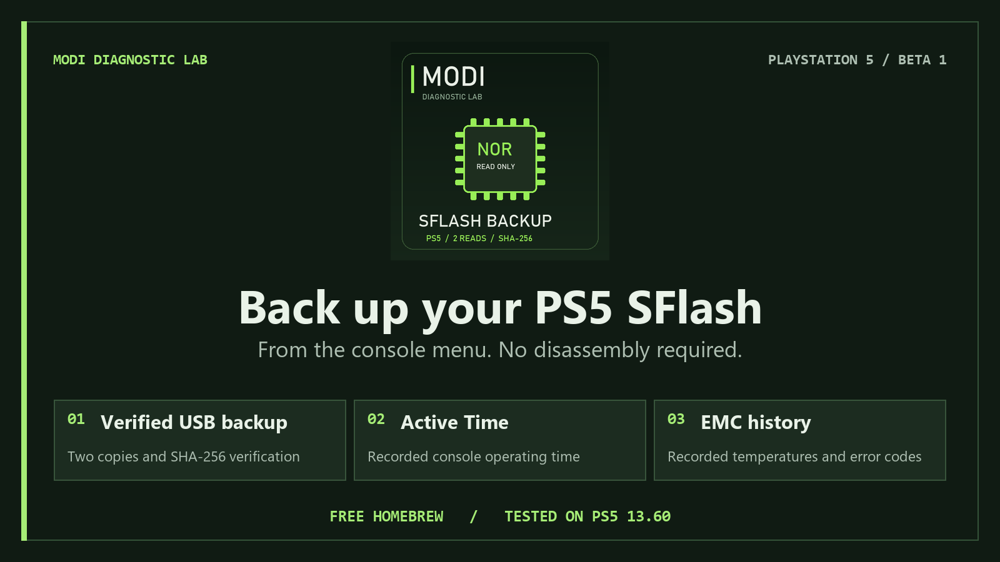
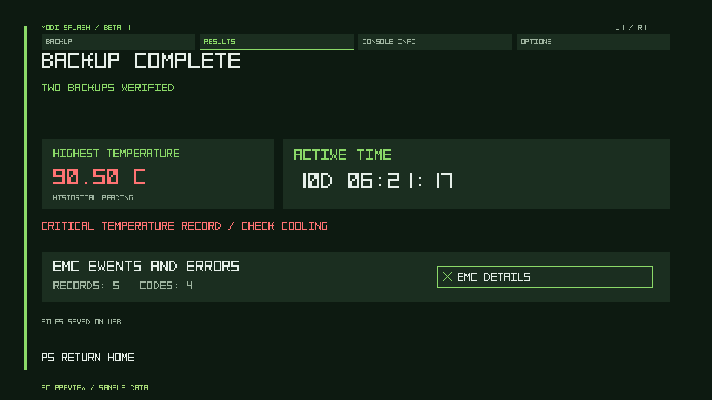
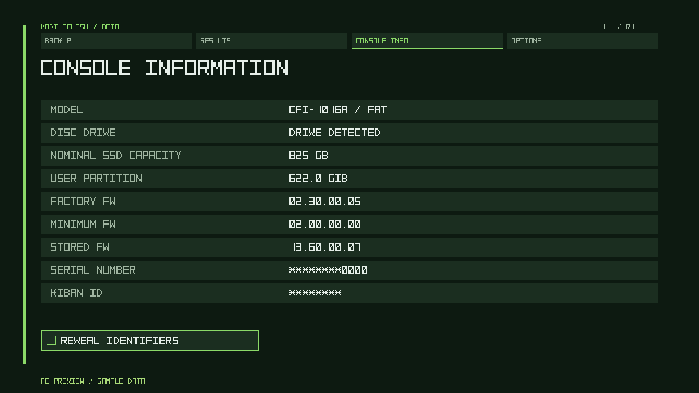
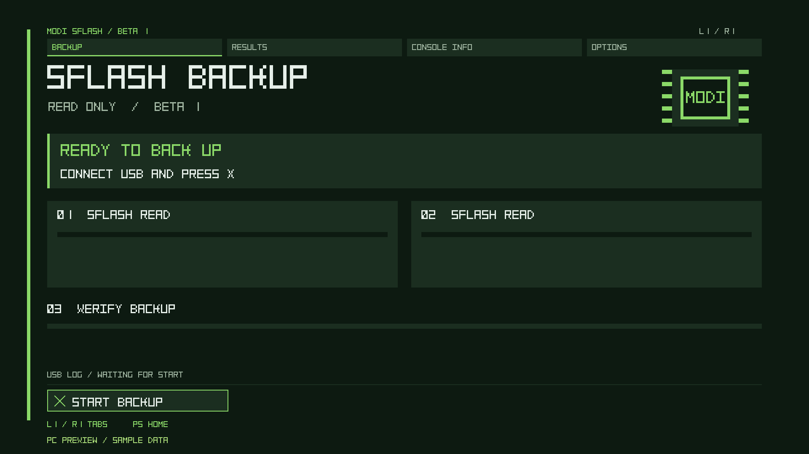

Two copies. Verified.
Two independent reads, two USB copies, then comparison and SHA-256 verification after closing and reopening the saved files.

Got a jailbroken PS5? Press X to save two verified SFlash copies to USB. Then check how long your console has actually been active and see its available temperature and EMC error history.
Free homebrew for hobbyists and repair benches. Launch it straight from the PS5 home screen.
For hobbyists and repair diagnostics · Embedded engine · Source flash is read-only
Two independent reads, two USB copies, then comparison and SHA-256 verification after closing and reopening the saved files.
Available recorded console operating time, displayed in days, hours, minutes and seconds. This is console operating time, rather than time spent in a particular game or the current session.
View available recorded temperatures and EMC error events. High readings can guide a cooling inspection and help assess whether the thermal interface needs service.
To set up PS5 FW 13.60 with Relapse, have a working elfldr on port 9021, kstuff-lite, ShadowMountPlus and a writable USB drive.
MODI-SFlash-Beta-1.ffpkg to the homebrew folder on USB and plug it into the PS5.MODI_PS5_SFLASH_RO on USB.The engine is embedded. No separate ELF or payload-folder copy is needed for this package.
Console Information shows available model, drive, storage and firmware information. Identifiers are masked by default. Options include automatic language selection, manual PL/EN selection and two text styles.



We plan to release a chip-programming tool for the community. The goal is to make writing a suitable, verified backup directly to a flash chip easier. The tool and recovery workflow are still in development; physical-chip recovery with this app’s backup has not yet been validated.
The MODI team reports verification on the FAT and Slim models below. All reported completed console tests used firmware 13.60. Results apply to the combinations listed; pending targets are not compatibility claims.
| Console | Model | Firmware | Status |
|---|---|---|---|
| FAT | CFI-1016 | 13.60 | Verified — reported by MODI |
| FAT | CFI-1116 | 13.60 | Verified — reported by MODI |
| Slim | CFI-2016 | 13.60 | Verified — reported by MODI |
| Slim | CFI-2116 | 13.60 | Verified — reported by MODI |
| PS5 Pro | — | 13.20 | Pending |
| Firmware | Status |
|---|---|
| 13.12 | Pending |
| 13.20 | Pending |
| 13.40 | Pending |
The embedded engine is byte-for-byte identical to the engine independently checked against a completed 13.60 backup: both saved copies were 2 MiB and matched. The final Beta 1 frontend passed PC compilation and rendering checks; this exact frontend has not yet been retested on a console.
The app backs up the SFlash image exposed by the console. SSD contents, game saves and optical-drive pairing recovery are outside the verified backup scope. Recorded thermal events are not a guarantee of the highest lifetime temperature and do not diagnose a cooling fault on their own.
The ZIP contains only the application, README, component licenses and checksums.
SHA-256 checksums · Package instructions (English) · Licenses and notices
ZIP SHA-256
88759f01945060160827d40cc27296f3ea4ce47013f62496504262c37ba56d00